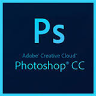
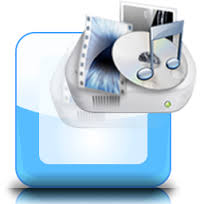

A computer software is a program of coadings by which we can make a link between user and Operating System.
It gets install in a Operating System and can be accesed at any time some of them are Adobe Photoshop, Avira Antivirus, Avast total security, Format factory etc.
Adobe PhotoshopIt is a software which is used to edit photos easily and can be effected also.
Any picture can be liquified, blured, mosaiced, framed, layered etc on the tip of hands
It is a antivirus software which is used to remove virus from a system.
Excepting the virus removing feature an antivirus also contains spyware, Quaratine, Internet security by installing such softwares we can protect our system from virus

It is a kind of software which is used to change the format of files either a video, audio, image, or any other kind of format
The format of image such as .jpg , .jpeg , .gif or any other format can be converted into .tiff , .bmp , .png etc.
Other media files either of video or audio can be converted easily like mp3, VOB, mp4, avi, aac, wav etc
It is a Microsoft Corporation software and have many uses.In every field it is used.
It comes in packets and a packet contains MS Access, MS Excel, MS Power point, MS outlook, MS One note, MS Infopath, MS Word etc and many other softwares.